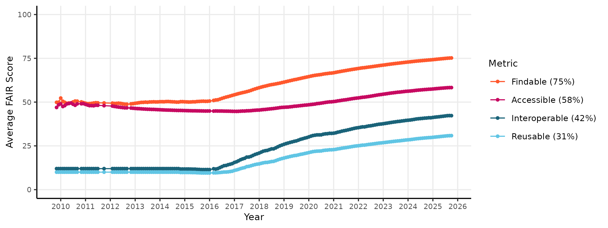
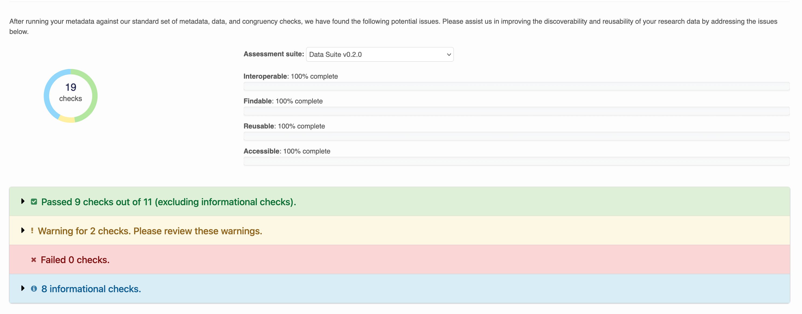
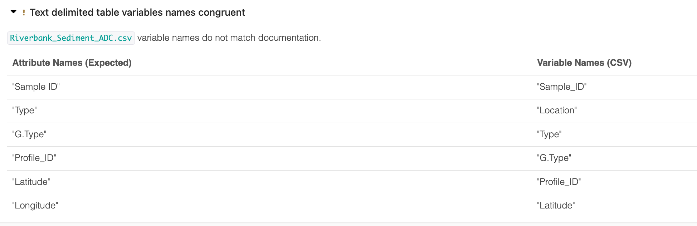
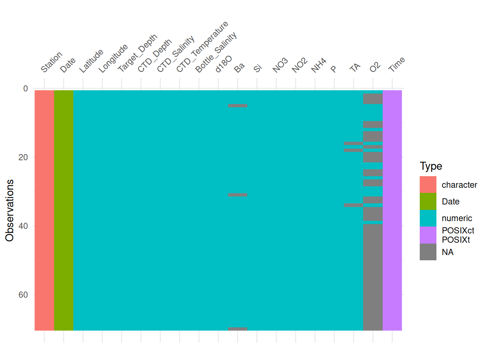
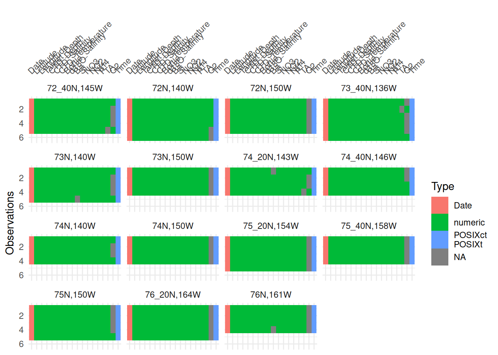

install.packages("skimr")13.1 Data Quality
Learning objectives:
- How the Arctic Data Center evaluates data quality
- How to use R to evaluate data quality
13.1.1 Automated Data Quality Assessment at the Arctic Data Center
The Arctic Data Center performs automated metadata and data quality assessments of every dataset shortly after it is submitted. Each assessment consists of a series of checks that are performed on either the metadata or data (or both!) contained within the dataset. Within what is called a “suite” of checks, the checks are classified into either required, optional, or informational checks. Additionally, they are classified into FAIR categories, where FAIR represents Findable, Accessible, Interoperable, Reusable.
An overall score is then calculated for each dataset, according to the following formula:
\[score = \frac{R_{pass} + O_{pass}}{R_{pass} + R_{fail} + O_{pass}}\] where R is the number of Required checks that pass or fail, and O is the number of Optional checks that pass or fail. This ensures that datasets are not penalized for failing optional checks. This system allows the Arctic Data Center to evaluate FAIR-ness of its datasets over time. The figure below shows the quality scores of the repository through time for metadata FAIRness.

To evaluate data quality over a wide range of data types and disciplines, the Arctic Data Center first conceptualized four categories of data quality checks. These categories are: congruency, accessibility, validity, and accuracy.Congruency
Is the file what it says it is?
Examples:
- data format matches format listed - checksum of file matches documentation - variable names in file match documentation
Accessibility
Can the file be accessed and read correctly?
Examples: - text formatted files valid according to subtype (eg: csv files match format) - binary files validate against declared type (eg: hdf5 is valid against HDF5 standard) - characters in text files are valid against declared encoding
Validity
Are values valid within reasonable bounds?
- air temperatures within -100 and 100 degrees C
- ocean depth does not exceed 10,935m
- tree diameters do not get smaller through time
Accuracy
Does this value make sense given the other values?
- statistical outliers in measured variables
- anomalous NDVI values caused by cloud interference
At the Arctic Data Center, we have chosen to tackle the first two types of data checks, since they are domain agnostic and do not require specialized knowledge to implement the checks. So far, the data suite we have developed has implemented the following checks:
| Check ID | Description |
|---|---|
| All files | Content malware-free |
| All files | Data format congruent with metadata |
| All files | Data content not zipped unless it is a shapefile set |
| Text files | Text encoding valid according to guessed format |
| Text delimited tables | Table variables congruent with metadata |
| Text delimited tables | Table well-formed |
| Text delimited tables | Column names printable |
| Text delimited tables | Columns and rows contain data |
| Text delimited tables | Dates parse correctly according to metadata |
| Text delimited tables | Latitude/longitude data congruent with metadata |
| Text delimited tables | Missing values documented |
| Text delimited tables | Shows a glimpse of a table |
| Shapefiles | Shapefile sets complete |
| Shapefiles | Shapefile coordinates within CRS bounds |
| Shapefiles | Shapefile geometry congruent with metadata |
| NetCDF files | NetCDF global attributes complete |
| NetCDF files | NetCDF variable attributes complete |
| NetCDF files | NetCDF coordinate attributes complete |
| Raster files | Raster well-formed |
When these checks are run, each dataset recieves a report like the below:

Warnings are issued for checks that failed, but are optional. Within each row, output describes the result of the check. For example: Column names in Riverbank_Sediment_ADC.csv are well formed. No non-printable characters detected.
Some output is collapsed for readability:

At the Arctic Data Center we can use these checks to gain insights about our data holdings. TODO: maybe insert figures here?
13.1.2 Checking Data Quality in R
Poll:
- What are the most common quality issues you see? (free text)
- What kind of data quality checks do you use on your own data? (free text)
- Do you have ideas for checks you think we should add to the ADC quality suite?
Although the Arctic Data Center has implemented data quality checks that are automated, the vast majority of data quality work still falls on researchers doing analysis. In this section we will discuss a few tools that researchers can use in R to do general data quality work.
13.1.2.1 Resolving mysteries with file
When a researcher receives a new file to incorporate into an analysis, the first step is to examine the file. One tool already used in the Arctic Data Center data quality suite is the file utility in linux/unix systems. This is a command run using the terminal that performs tests on the content of a file to determine its type. This is useful for files where the type is unknown, or for files that cannot be read into R for unknown reasons.
In the terminal, run the following:
file data/BGchem2008data.csvYou should see an output like: data/BGchem2008data.csv: CSV text. Which makes sense!
The file command is very helpful at catching things like this, where we have an excel file masquerading as a csv file. You might wind up using this if you try to read in the example file below using read.csv, and get output that looks completely garbled.
file example-data/my-data.csv
example-data/my-data.csv: Microsoft Excel 2007+Another great use of the file command is for mystery extensions:
file example-data/JUSTIN_400__001.DZG
example-data/JUSTIN_400__001.DZG: ASCII text, with CRLF, LF line terminators13.1.2.2 Quick Summaries with skimr.
First, we need to install the skimr package.
And load it into our environment, along with readr
library(skimr)
library(readr)
library(dplyr)
library(lubridate)Now we’ll read in a familar file, the BGChem2008data.csv from Craig Tweedie. (2009). North Pole Environmental Observatory Bottle Chemistry. Arctic Data Center. doi:10.18739/A25T3FZ8X.
bg_chem <- read_csv("data/BGchem2008data.csv")Rows: 70 Columns: 19
── Column specification ────────────────────────────────────────────────────────
Delimiter: ","
chr (1): Station
dbl (16): Latitude, Longitude, Target_Depth, CTD_Depth, CTD_Salinity, CTD_T...
dttm (1): Time
date (1): Date
ℹ Use `spec()` to retrieve the full column specification for this data.
ℹ Specify the column types or set `show_col_types = FALSE` to quiet this message.Notice that the read_csv call already gives us some information about the dataset here. It tells us what the columns are, and what the column types are. skimr can give us even more information that will be helpful.
skim(bg_chem)| Name | bg_chem |
| Number of rows | 70 |
| Number of columns | 19 |
| _______________________ | |
| Column type frequency: | |
| character | 1 |
| Date | 1 |
| numeric | 16 |
| POSIXct | 1 |
| ________________________ | |
| Group variables | None |
Variable type: character
| skim_variable | n_missing | complete_rate | min | max | empty | n_unique | whitespace |
|---|---|---|---|---|---|---|---|
| Station | 0 | 1 | 8 | 11 | 0 | 15 | 0 |
Variable type: Date
| skim_variable | n_missing | complete_rate | min | max | median | n_unique |
|---|---|---|---|---|---|---|
| Date | 0 | 1 | 2008-03-21 | 2008-03-30 | 2008-03-26 | 9 |
Variable type: numeric
| skim_variable | n_missing | complete_rate | mean | sd | p0 | p25 | p50 | p75 | p100 | hist |
|---|---|---|---|---|---|---|---|---|---|---|
| Latitude | 0 | 1 | 74.04 | 1.37 | 72.05 | 72.97 | 74.05 | 75.26 | 76.32 | ▇▇▆▇▆ |
| Longitude | 0 | 1 | -148.11 | 7.98 | -163.70 | -153.27 | -149.81 | -140.31 | -136.54 | ▃▃▇▅▇ |
| Target_Depth | 0 | 1 | 123.79 | 106.04 | 20.00 | 60.00 | 85.00 | 190.00 | 430.00 | ▇▁▂▂▁ |
| CTD_Depth | 0 | 1 | 125.42 | 107.70 | 15.13 | 60.34 | 85.78 | 192.66 | 442.17 | ▇▁▂▂▁ |
| CTD_Salinity | 0 | 1 | 31.45 | 2.31 | 25.50 | 30.17 | 31.65 | 33.08 | 34.82 | ▂▂▆▇▇ |
| CTD_Temperature | 0 | 1 | -0.96 | 0.66 | -1.68 | -1.49 | -1.26 | -0.48 | 0.70 | ▇▂▂▁▂ |
| Bottle_Salinity | 0 | 1 | 31.45 | 2.31 | 25.50 | 30.17 | 31.65 | 33.08 | 34.82 | ▂▂▆▇▇ |
| d18O | 0 | 1 | -2.02 | 1.12 | -3.73 | -2.96 | -2.04 | -1.49 | 0.21 | ▆▃▇▁▃ |
| Ba | 0 | 1 | 60.95 | 35.20 | -99.00 | 64.08 | 69.68 | 72.25 | 86.09 | ▁▁▁▁▇ |
| Si | 0 | 1 | 13.29 | 11.32 | 2.46 | 3.92 | 8.42 | 20.98 | 36.58 | ▇▃▁▁▂ |
| NO3 | 0 | 1 | 6.86 | 6.12 | -0.05 | 0.78 | 4.75 | 13.04 | 15.85 | ▇▂▁▂▅ |
| NO2 | 0 | 1 | 0.05 | 0.06 | 0.00 | 0.01 | 0.02 | 0.04 | 0.27 | ▇▁▁▁▁ |
| NH4 | 0 | 1 | 0.06 | 0.07 | 0.01 | 0.02 | 0.03 | 0.07 | 0.37 | ▇▁▁▁▁ |
| P | 0 | 1 | 1.12 | 0.42 | 0.57 | 0.80 | 0.97 | 1.50 | 1.87 | ▇▇▂▁▅ |
| TA | 0 | 1 | 2089.08 | 478.16 | -99.00 | 2135.50 | 2203.10 | 2270.99 | 2312.30 | ▁▁▁▁▇ |
| O2 | 0 | 1 | -73.06 | 46.14 | -99.00 | -99.00 | -99.00 | -99.00 | 9.25 | ▇▁▁▁▂ |
Variable type: POSIXct
| skim_variable | n_missing | complete_rate | min | max | median | n_unique |
|---|---|---|---|---|---|---|
| Time | 0 | 1 | 1899-12-31 00:19:50 | 1899-12-31 23:50:29 | 1899-12-31 20:52:24 | 15 |
skim gives us information about the data frame including basic statistics on the numeric values, missing values, and number of unique values in the character variables.
Helpfully, skim can also handle grouped output, if we wanted to look more closely at summaries of oxygen concentaration by station, for example, we can run:
bg_chem %>%
select(Station, O2) %>%
group_by(Station) %>%
skim()| Name | Piped data |
| Number of rows | 70 |
| Number of columns | 2 |
| _______________________ | |
| Column type frequency: | |
| numeric | 1 |
| ________________________ | |
| Group variables | Station |
Variable type: numeric
| skim_variable | Station | n_missing | complete_rate | mean | sd | p0 | p25 | p50 | p75 | p100 | hist |
|---|---|---|---|---|---|---|---|---|---|---|---|
| O2 | 72N,140W | 0 | 1 | -27.59 | 55.32 | -99 | -72.64 | 7.18 | 8.65 | 9.19 | ▃▁▁▁▇ |
| O2 | 72N,150W | 0 | 1 | -99.00 | 0.00 | -99 | -99.00 | -99.00 | -99.00 | -99.00 | ▁▁▇▁▁ |
| O2 | 72_40N,145W | 0 | 1 | -56.25 | 58.55 | -99 | -99.00 | -99.00 | 6.54 | 9.23 | ▇▁▁▁▅ |
| O2 | 73N,140W | 0 | 1 | -56.22 | 58.59 | -99 | -99.00 | -99.00 | 6.66 | 9.25 | ▇▁▁▁▅ |
| O2 | 73N,150W | 0 | 1 | -99.00 | 0.00 | -99 | -99.00 | -99.00 | -99.00 | -99.00 | ▁▁▇▁▁ |
| O2 | 73_40N,136W | 0 | 1 | -63.36 | 55.22 | -99 | -99.00 | -99.00 | -19.65 | 9.06 | ▇▁▁▁▃ |
| O2 | 74N,140W | 0 | 1 | -45.58 | 61.69 | -99 | -99.00 | -46.24 | 7.18 | 9.15 | ▇▁▁▁▇ |
| O2 | 74N,150W | 0 | 1 | -99.00 | 0.00 | -99 | -99.00 | -99.00 | -99.00 | -99.00 | ▁▁▇▁▁ |
| O2 | 74_20N,143W | 0 | 1 | -45.57 | 61.71 | -99 | -99.00 | -46.23 | 7.20 | 9.20 | ▇▁▁▁▇ |
| O2 | 74_40N,146W | 0 | 1 | -45.78 | 61.46 | -99 | -99.00 | -46.20 | 7.03 | 8.29 | ▇▁▁▁▇ |
| O2 | 75N,150W | 0 | 1 | -77.88 | 47.23 | -99 | -99.00 | -99.00 | -99.00 | 6.61 | ▇▁▁▁▂ |
| O2 | 75_20N,154W | 0 | 1 | -99.00 | 0.00 | -99 | -99.00 | -99.00 | -99.00 | -99.00 | ▁▁▇▁▁ |
| O2 | 75_40N,158W | 0 | 1 | -99.00 | 0.00 | -99 | -99.00 | -99.00 | -99.00 | -99.00 | ▁▁▇▁▁ |
| O2 | 76N,161W | 0 | 1 | -99.00 | 0.00 | -99 | -99.00 | -99.00 | -99.00 | -99.00 | ▁▁▇▁▁ |
| O2 | 76_20N,164W | 0 | 1 | -99.00 | 0.00 | -99 | -99.00 | -99.00 | -99.00 | -99.00 | ▁▁▇▁▁ |
Skim is a great way to get a big picture overview of your data to spot major issues. Does anything stand out here?
-99 (or some repetition of those digits) is a very common missing value code that isn’t automatically recognized by R. Let’s go back to the read_csv call to add it in as an argument.
bg_chem <- read_csv("data/BGchem2008data.csv", na = "-99")Rows: 70 Columns: 19
── Column specification ────────────────────────────────────────────────────────
Delimiter: ","
chr (1): Station
dbl (16): Latitude, Longitude, Target_Depth, CTD_Depth, CTD_Salinity, CTD_T...
dttm (1): Time
date (1): Date
ℹ Use `spec()` to retrieve the full column specification for this data.
ℹ Specify the column types or set `show_col_types = FALSE` to quiet this message.Another similar package is called visdat. It lets you visualize a data frame with its column types, variable names, and missing values.
install.packages("visdat")library(visdat)
library(ggplot2)vis_dat(bg_chem) +
theme(axis.text.x = element_text(angle = 45, vjust = 0))
Similar to skimr, you can also group (in this case facet) the output by a variable.
vis_dat(bg_chem, facet = Station) +
theme(axis.text.x = element_text(angle = 45, vjust = 0))
This is helpful because it shows us where the missing values are and in which variable.